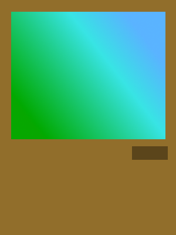
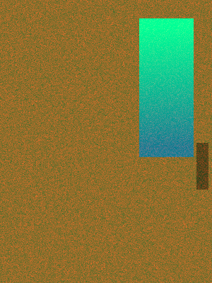

いらっしゃい。
Zerosaka Diaryは、
理科の事から道徳のことまで書いてある教科書のように
偏りはありつつもかなりいろんなことが書いてある...はずのホームページです。
とりあえず、見てみないとわからないのでドアを開けて見てみましょう。

←本館≪Zerosaka Diary≫
別館≪Zerosaka Diary annex≫⇒

更新前のサイトに御用の方はこちら
更新前のサイトは2018/04/11をもって全て閉鎖しました。
このホームページでは
こちら
に書かれているフォントをダウンロードすると、そのフォントで表示されます。
広告